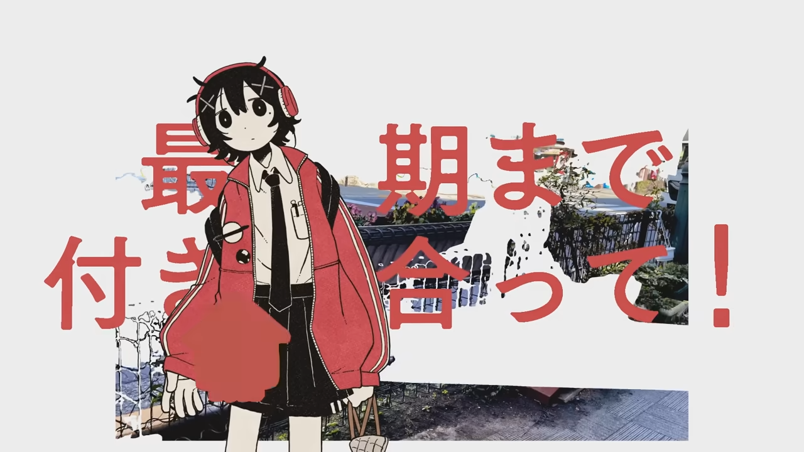
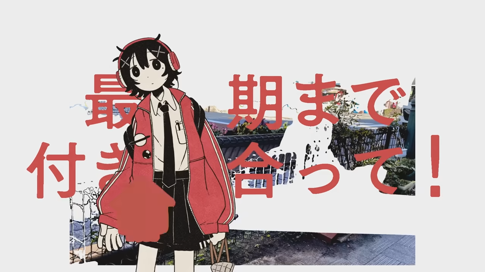

年の報告2025
hazuqu ideoaves

2025年お疲れ様でした
木葉はづくです。今年は全体的に外側に出過ぎて徘徊している気分でした。ちょっと遠すぎるかもです。
もうすこし内側に行きたいですね。
ともかく、良いお年を。
今年した新しいこと
ideoaves
このブログサイトも含めたクリエイティブコレクティブを正式に始動しました。これは特に肩書を「ideoaves」と称するものではなくて、ゆるやかに必要なものを自分の範疇を超えて入手するハブに近いものです。
比較的色々できたかなと思います。
それとideoavesのgithub pagesを新調してこのブログを作るようにもなりましたね。
𝗣𝗢𝒊𝗡𝗧 𝗡𝗘𝗠𝗢
Discord個人鯖『𝗣𝗢𝒊𝗡𝗧 𝗡𝗘𝗠𝗢』をリニューアルしました。よくある制作のインプットを貼る場ではありますが、近い友人を固めていないため各々の分野が被っていないという利点があります。
Twitterのおすすめ欄の焼き増しではないようにしているので、個人鯖群に飽きた人には少し刺激になると思います。
ディレクション
去年から継続して演出面での話をする頻度を増やしています。
去年に「画面内映像」という肩書を頂いたのでモニターを直撮りする演出を試したり
デザインの段階で美学ミームの文脈に枝葉を伸ばさないか提案をしてみたり
 していました。
していました。まだ型が定まっていない段階でもしかすると面白い話ができるかも知れません。
ISF, python
もともとjs周辺ではコードを書いていましたが、canvasの外にプログラム周辺でできることを増やしたく、内々でpython製のツールを作ったり、ISFを使ってAE上で都合のいいエフェクトを作ったりしています。
今年楽しかったこと
映像の仕事
ディレクションの話にもつながりますが、面白いフォーマットやフローの仕事が多かったです。コンテストで受賞した皆様のイラストをめちゃくちゃにするとか
ずっと16分割された2DCGとか
アニメーション・p5jsグラフィック・コンポジットを同時進行するとか
他にも縦向きのサイネージにブルスクを出したり
 、AA（アスキーアート）の肩書をもらったり
、AA（アスキーアート）の肩書をもらったり  、画像をZ深度とってトランジションしたりしていました。
、画像をZ深度とってトランジションしたりしていました。もっとYoutubeをいろいろにしたい！！！
生活
CDs関連でGOLD DISC検索すると様子が見えます: https://x.com/search?q=GOLDDISC%20CDsに出たりYMWに今年も出たりしました。
他にはマルチネ20等のクラブや音楽イベントにお邪魔しました。
あとはちょっとした集まりに出向くようになりました。去年よりももっと人と交流する体力がついてきました。
今年はちょっと重くなってしまった鬱病の治療がてらほとんど動かずにいましたので、来年は健康になれると良いなと思います。
ちなみに1ヶ月に1回程度しか外に出ていないわけで、家で何をしているのかと言うと、
我々の部屋にはソフト・ハード双方の視覚・聴覚制作ツールが一通りあり、触って、
Youtubeでホロライブを見て、どこからか出てきた本を読んで、
色々なクリエイティブチームと通話し茶々を入れています。
ideoaves各々の動向
メンバーの総括もしておきます。木葉はづく
hazuquの制作リストを御覧ください折メ思案
宇推くりあ - H3ロケット打上げ成功1周年のお祝いしよ！！！ (サムネイル)________ - 書留 (動画用イラスト)
ウソのつきかた - 泡沫二进 (同人寄稿)
吉田楓 - ウソのつづりかた (同人寄稿)
ph環yimiru
Gradierwerk - 多島海 Vol.1 特集：都市SF (表紙写真)♥
⤴